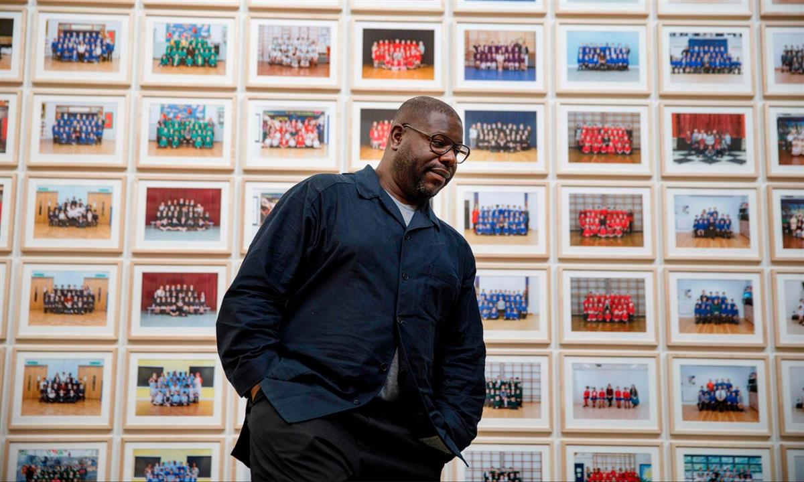

McQueen with one of the school classes featured in the project. Photograph: Guy Bell/Rex/Shutterstock
Artist says his class photos on show at Tate Britain could be a catalyst for UK schoolchildren
Year 3, Steve McQueen’s “portrait of citizenship” at Tate Britain, could be the catalyst to inspire a new generation of artists, according to the Turner prize and Oscar winner, who said British children deserved access to world-class art education.
McQueen, whose ground-breaking work features portraits of more than 76,000 London schoolchildren and took a year to complete, said Year 3 would help to promote art education in school and the need for diverse work to be included in art institutions.
“I remember going to the National Portrait Gallery and the only black people I saw there were the guards,” said McQueen. “Art school was my liberation, that was where I could achieve my goals and realise myself. That opportunity should be offered up to every single kid and they can go off in whatever direction they want.
“You think of someone like Alexander McQueen or Damien Hirst, both came from working-class backgrounds. They had the chance to experiment at school – and they ended up at the top of their game.”
Just under 70% of London schools took part in the project, with a huge amount of safeguarding work needed – including gaining consent from parents of all of the children photographed. Teams of photographers took pictures in at least 80 schools per week, ran 90-minute workshops with the pupils, and took the portraits that were often shot in gym halls.
Clarrie Wallis, the exhibition’s curator, said the project was also about “instilling a mindset” in schoolchildren that they could go on to achieve what they wanted. Wallis said Year 3 offered Tate Britain a chance to “champion why creativity matters” and introduce itself to a new generation of children, many of whom had never been to a gallery before.
Each day for 20 weeks, 600 schoolchildren will be brought to Tate Britain to view Year 3. Each class photographed will have a chance to see their picture hanging on the gallery walls and also in larger form on a digital screen, accompanied by a video of McQueen addressing them directly.
Wallis said Year 3 prompted viewers to ask what opportunities there were for children and what influenced their outcome in life. “Is it ability, opportunity, or luck?” she said. “At the moment, in the exhibition, they’re presented on a level playing field.”

McQueen said school trips had inspired him as a child. Photograph: Tolga Akmen/AFP via Getty Images
McQueen said the project was a powerful way to address some of the racial imbalance in major art institutions, as London schoolchildren – regardless of background – were now able to see themselves in one of the most respected art spaces in Europe. He said: “Do you see yourself on the wall in this museum? If you do, you think of yourself as being important because you’re on the walls of this very important institution.
“It’s also about coming to central London. Some kids don’t even get out of their borough. They’ve never come to town before,” said McQueen, who also spoke of how school visits inspired him as a child.
“Those school trips were very important to me. You get your packed lunches, you sit around with an excitement, you enter the space. Then you just try to sort of grapple with it all, and it opens and expands people’s minds and their possibilities.”
Tate Britain, the arts commissioning organisation Artangel and the creative learning specialists A New Direction all backed the project, which will also be displayed on 600 billboards dotted throughout the capital. At Pimlico underground station, 16 class portraits line the platforms to create a “platformorama”, and Tate estimates that in total about 17 million people will see the work on the billboards that are in place until 18 November.
McQueen said the work would never be sold and the pictures would be sent to the schools at the end of the exhibition, which will run until 3 May 2020.
SOURCE: THE GUARDIAN
MORE READING: